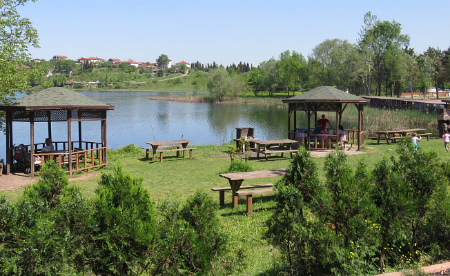
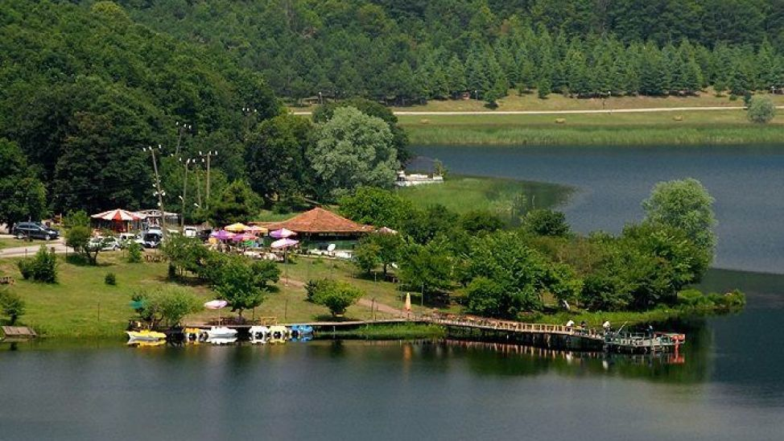
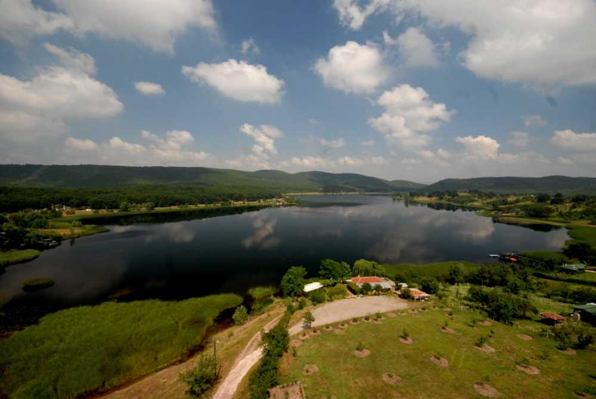

Poyrazlar gölü, Sakarya il merkezinin 7–8 km kuzeydoğusunda, Sakarya nehrinin kenarında yer alan alüvyal set gölüdür. Göl kıyısında bulunan Poyrazlar köyünden adını alan gölün diğer bir adı da Teke gölüdür. Göl alanı 67 hektar, kıyılarının
uzunluğu 4400 m olan göl 1. derece doğal sit alanıdır[1]. Göl fazla sularını 350 m uzaktaki Sakarya Nehrine boşaltmaktadır. Derinliği 3-8 metre civarı olan gölün güney kısımları sığdır ve sazlıklarla kaplıdır. Göl çevresi ormandır.
Gölün güney kısımlarında küçük bir longoz yer alır, bu alan su kuşlarının beslenme ve üremesinde önemlidir. Göl çevresi Orman Bölge Müdürlüğü tarafından günübürlik ziyaretçiler için mesire yeri olarak düzenlenmiş, özel sektör tarafından
işletilmektedir. Gölde 64'ü yıl boyu kalan yerli, kışın gelen 36, yaz mevsiminde gelen 47, transit geçen 6 tür olmak üzere 154 kuş tür tespit edilmiştir.[2] Gölde yakalanan tatlısu levreği ve turna balığı sayıca azaldığı için 1992
yılında Su Ürünleri Kooperatifi faaliyetine son vermiştir. Poyrazlar gölünden; kadife, tatlısu levreği, turna, kızılkanat, gümüşi havuz balığı, kızılgöz, çapak ve kerevit yakalanmaktadır. Av sezonunda günde 20–85 kg arası balık yakalanmaktadır.[3]
Eski Sakarya-Karasu yolunda 10.km'de yer alan göl, Yeni Karasu yolunda Güneşler kavşağından sonra 5.km'dedir. Poyrazlar'da ilkbaharda Çarşıdan direkt olarak gitmek için uzun çarşının sonunda ki minibüslerden poyrazlar minibüsüne binip
ulaşmanız mümkündür.



Ornitofaunası
Tabiatı Koruma Alanı statüsünde olan ve suyu tatlı olup Sakarya Nehrinin yatak değiştirmesiyle oluşmuştur. 6.5 km² drenaj alanına sahip olan gölün büyüklüğü 0,6 km²'dir. Sakarya Nehri taştığı zaman, suları kapaklı boğaz adı verilen bir
boğazla göle karışır. Normal zamanlarda ise nehir sızıntılarla gölü besler. Gölün kuzey ucundan çıkan dere ile göl suları Sakarya Nehri'ne karışır.[4] %53'ü Passeriformes'e ait iken, geri kalan 72 tür diğer 16 takıma aittir. Passeriformes'in
sahada baskın takım olması, takıma ait türlerin geniş yayılış göstermesidir. Sıklık değeri %81-100 (Sürekli gözlenen türler) olan 7 türün Passeriformes takımına ait olması bu durumu doğrulamaktadır. Ayrıca geri kalanların 3'ü nadir,
27'si seyrek, 29'u genellikle ve 19'u çoğunlukla gözlenen türler olarak, ötücü kuşların sahadaki sıklık değerlerini oluşturmaktadır.[5] Göl çevresinde gürgen ve meşeden oluşmuş ormanlık alanın yanında sonradan ağaçlandırmayla karaçam
ve sarı çam türlerinden oluşan ormanlık alanlar mevcuttur. Göl çevresi, piknik amacıyla özellikle hafta sonunda yoğun olarak kullanılmaktadır. Göl; turna , yayın ve sazan bakımından oldukça zengindir.[4]
Balıkçı Profili
Poyrazlar Gölü balıkçılarının eğitim durumuna bakıldığında % 80 inin ilkokul, % 10 unun lise ve % 10 unun üniversite olduğu belirlenmiştir.Balıkçıların hepsinin motorsuz 3–4 m arasında değişen boylarda polyester malzemeden yapılmış tekneler
kullandıkları belirlenmiştir. Poyrazlar Gölü'nde avlanan balıkçıların avlanma ekipmanları fanyalı, fanyasız ağlar, olta ve pinterlerdir. Fanyalı ve fanyasız ağların boyları 50 m ile 300 m arasında, enleri ise 2 m ile 4 m arasındadır.
Fanyalı ağlarda ağ göz açıklığı 36 mm ile 48 mm arasında fanyasız ağlarda 70 mm ile 90 mm arasında değişmektedir. Poyrazlar Gölü'nde avlanan balıkçılar av malzemelerini kendi imkânlarıyla satın aldıklarını belirtmişlerdir. Balıkçılardan
elde edilen bilgilere göre, avlanma mevsiminde balıkçılar ağları akşamdan göle bırakıp sabah erkenden toplamaktadırlar. Ağların gölde kalış süreleri 10-12 saat arasında değişmektedir. Poyrazlar Gölü balıkçıları incelendiğinde balıkçıların
balıkçılığı seçmesindeki amaçlarının eşit bir oransal dağılım gösterdiği saptanmıştır.Yapılan çalışmada gölde avlanan balıkçıların iş deneyim sürelerinin 10 ile 40 yıl arasında değişmekte olduğu, ortalama deneyim süresi de 20 yıl olarak
saptanmıştır.Poyrazlar Gölü'nden günlük avlanan balık miktarı 20–85 kg dır. Gölde yapılan balıkçılık faaliyetlerinden elde edilen günlük gelir ise 90-382.5 TL arasında değişmektedir.[6]